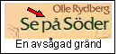

|
Ur Stockholmsliv, Staffan Tjerneld, 1950
Strax väster om Manhemssamhället, vid nummer 116, svängde Hornsgatan av i en tvär båge åt norr och fortsatte i Hornstulls(Brännkyrka)gatan-som för övrigt fortfarande avviker från parallelliteten - ut mot Hornstull. Hornskroken, som den kallades, förblev orubbad till 1907, när man började riva för Ansgariegatan, och en del år senare sprängdes Hornsgatan rakt västerut efter stadsplanekontorets linjaler. Helt har den gamla Hornskroken inte försvunnit. Ännu ligger några kåkar kvar i hörnet ovanför Hornsoch Ansgariegatorna, och man har till och med sparat en bit av den gamla körbanan, fastän den numera degraderats till återvändsgränd. Det förnämsta huset i Hornskroken, Wirwachska gården (nu Ansgariegatan 5) finns också kvar. 1771 började apotekaren Johan Mikael Wirwachs på Enhörningen i Götgatsbacken bygga huset, sedan han vidtalat murmästaren J. W. Elies att göra upp ritningarna. Läget var väl valt, med Hornstullsgatan som en lång allé rakt mot fasaden och de ursprungligen halvrunda flyglarna. Wirwachska gården var en typisk malmgård. I flygelbyggnaderna inrymdes stall, fähus, foderskulle och bodar av olika slag, och åt öster fanns en stor trädgård med åttio fruktträd och en rik flora av medicinalväxter. Numera plockar man inga äpplen på tomten, men ännu i slutet av förra seklet ansåg pojkarna i Hornskroken det mödan värt att forcera det höga, spikbeslagna trädgårdsplanket.
|
Wirwachska gården, som givetvis ingått i drottning Kristinas rikhaltiga förråd av jaktslott, har förändrats flera gånger och bevarar av sin ursprungliga inredning endast några vackra rokokodörrar, paneler och målade kakelugnar. Numera ägs huset av Stockholms stad, som inrättat barnkrubba i den gamla malmgården. Nära granne med Wirwachska gården låg Hornskrokens stora industriföretag, E. W. Friestedts tekno-kemiska fabrik och ångkvarn och strax intill, i Hornstullsgatan 7, fanns krogen Lejonet, den enda i Hornskroken som överlevde krogdöden 1877 och som för övrigt fortfarande finns kvar, även om numera Lejonet blivit örn. Dessförinnan fanns här ytterligare två krogar, dels i hörnet av Besvärs(Brännkyrka) gatan mittemot Wirwachska gården, dels Gula Knuten, ej att förväxla med likalydande i S:t Paulsgatan 9, i själva Hornsgatskröken. Ovanför Gula Knuten, på berget där Södra kommunala mellanskolan byggdes 1935, låg Michel Jöranssons kvarn, en fotkvarn från 1600-talet. Den eldhärjades i oktober 1871. Ytterligare en 1600-talskvarn fanns ovanför Friestedtska fabriken: Almens eller Gubbhuskvarnen, som revs omkring 1890.
 |